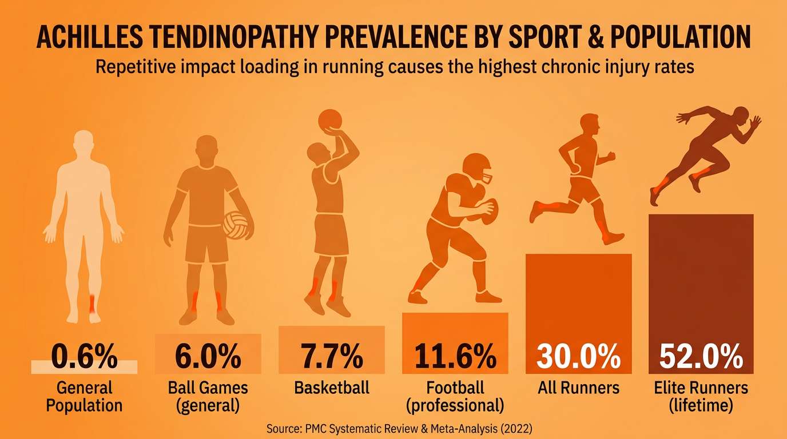

What Are Chronic Injuries?
A chronic injury is an injury caused by overuse and repetitive movements that develops gradually over time. Unlike acute injuries, which happen suddenly from a single impact or trauma, chronic injuries build up slowly through repeated stress on the same part of the body. They are often called overuse injuries.
Acute injuries are caused by a single, sudden event — such as a tackle, fall or collision. Chronic injuries develop gradually through overuse and repetitive movements over weeks, months or even years. Knowing the difference is essential for the exam.
Chronic injuries are common in sports that involve repetitive actions — running, throwing, swimming and jumping all put repeated stress on specific muscles, tendons and bones. If the body does not get enough rest between training sessions, small amounts of damage accumulate and eventually cause pain and inflammation.
Tendonitis
Tendonitis is the inflammation of a tendon — the tough, flexible tissue that connects muscle to bone. It is caused by repetitive motions that place stress on the tendon over time. Tendonitis can develop from jobs or hobbies that involve the same movement again and again.
Symptoms and Treatment
The main symptoms of tendonitis are tenderness around the affected area, mild swelling, and pain or aching during movement. Treatment typically involves the PRICE protocol (Protection, Rest, Ice, Compression, Elevation), rest from the activity that caused it, and anti-inflammatory medication to reduce swelling and pain.
Three Key Types of Tendonitis
There are three types of tendonitis you need to know for the exam, each affecting a different part of the body:
Achilles tendonitis affects the Achilles tendon at the back of the heel and lower leg. It is common in runners and jumpers who repeatedly push off from the ground. The repetitive stretching and loading of the tendon causes inflammation, leading to pain and stiffness around the heel.
Patellar tendonitis affects the tendon just below the kneecap (patella). It is sometimes called “jumper’s knee” because it is common in basketball, volleyball and other jumping sports. Repeated jumping and landing puts constant stress on the patellar tendon, causing pain and swelling below the knee.
Rotator cuff tendonitis affects the group of tendons and muscles around the shoulder joint. It is common in swimmers, tennis players and throwers who repeatedly raise their arm overhead. The repetitive shoulder movement causes inflammation of the rotator cuff tendons, leading to pain when lifting or rotating the arm.

Epicondylitis
Epicondylitis is the inflammation of an epicondyle, which is a bony bump at the elbow where tendons attach to the humerus (upper arm bone). It is caused by overuse through repetitive arm and wrist movements. There are two types:
- Lateral epicondylitis (Tennis elbow) — causes pain on the outside of the elbow. It results from repeated backhand movements in tennis or similar overarm actions that strain the tendons on the outer elbow.
- Medial epicondylitis (Golfer’s elbow) — causes pain on the inside of the elbow. It results from repeated wrist flexion during golf swings and similar gripping motions. A useful memory aid: “In golf you hit the ball in to the hole — golfer’s elbow affects the inside.”
Lateral epicondylitis (tennis elbow) = pain on the outside of the elbow. Medial epicondylitis (golfer’s elbow) = pain on the inside of the elbow. Both are caused by repetitive arm and wrist movements.
Symptoms and Treatment
Both types of epicondylitis share similar symptoms: pain and tenderness around the elbow, a weak grip, and pain when gripping or twisting objects. Treatment includes the PRICE protocol, rest from the activity causing the problem, an elbow brace or support, anti-inflammatory medication, and physiotherapy to strengthen the surrounding muscles.
Shin Splints
Shin splints cause pain along the front of the lower leg, around the shin bone (tibia). They are caused by excessive force on the tibia from constant road running or running on hard surfaces. The muscles and tissues around the bone swell and press on it, creating a dull, persistent ache.
Symptoms and Treatment
The main symptoms of shin splints are a dull ache in the front of the lower leg, pain that develops during exercise, and tenderness along the inside of the lower leg. Treatment involves rest and ice to reduce inflammation, an elastic compression bandage for support, and anti-inflammatory medication.
Shin splints can often be prevented with the right precautions. Wearing appropriate running shoes with proper cushioning and support helps absorb impact. Regular stretching before and after exercise keeps the calf muscles flexible and reduces strain on the tibia. Strength training for the lower legs builds up the muscles around the shin, giving the bone better protection. Gradually increasing training intensity rather than making sudden jumps also reduces the risk.
Stress Fractures
A stress fracture is a small crack in the bone caused by repetitive trauma. While fractures are often classified as acute injuries, stress fractures can also be chronic because they develop gradually through repeated impact rather than a single blow. They are most common in the lower leg bones and are frequently seen in runners, dancers and gymnasts.
Stress fractures are often caused by overtraining or suddenly changing the surface you train on — for example, switching from grass to concrete increases the impact force on bones significantly. The repeated shock causes tiny cracks that worsen over time if the athlete continues training without rest.
Symptoms and Treatment
The main symptoms are pain around the affected area and swelling or contusions (bruising). An X-ray is needed to confirm the diagnosis. Treatment includes rest and ice, anti-inflammatory medication, and in some cases a walking boot or brace to protect the bone while it heals. Continuing to train through a stress fracture risks a full break.